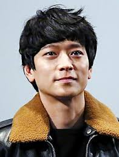

두근두근 내 인생(2014)
감독 : 이재용
배우 : 강동원, 송혜교

줄거리
설명얼굴은 80살, 마음은 16살 소년“우리 아이는 세상에서 가장 특별합니다" 한 때 헛발 왕자로 불리던 태권도 유망주 ‘대수’와 아이돌을 꿈꾸던 당찬 성격의 ‘미라’. 하지만 17살에 아이를 가져 불과 서른 셋의 나이에 16살 아들 ‘아름’이의 부모가 되어 있다. 남들보다 빨리 늙는 선천성 조로증인 아름이의 신체 나이는 여든 살. 어리고 철없는 부모지만 대수와 미라는 아름이와 씩씩하고 밝게 살아간다. 그러던 어느 날 그들의 사연이 세상에 알려지고, 하루하루 늙어가는 것이 전부였던 아름이에게 두근거리는 일들이 생기기 시작하는데... 세상에서 가장 늙은 아들과 가장 어린 부모.그들의 이야기가 시작된다!